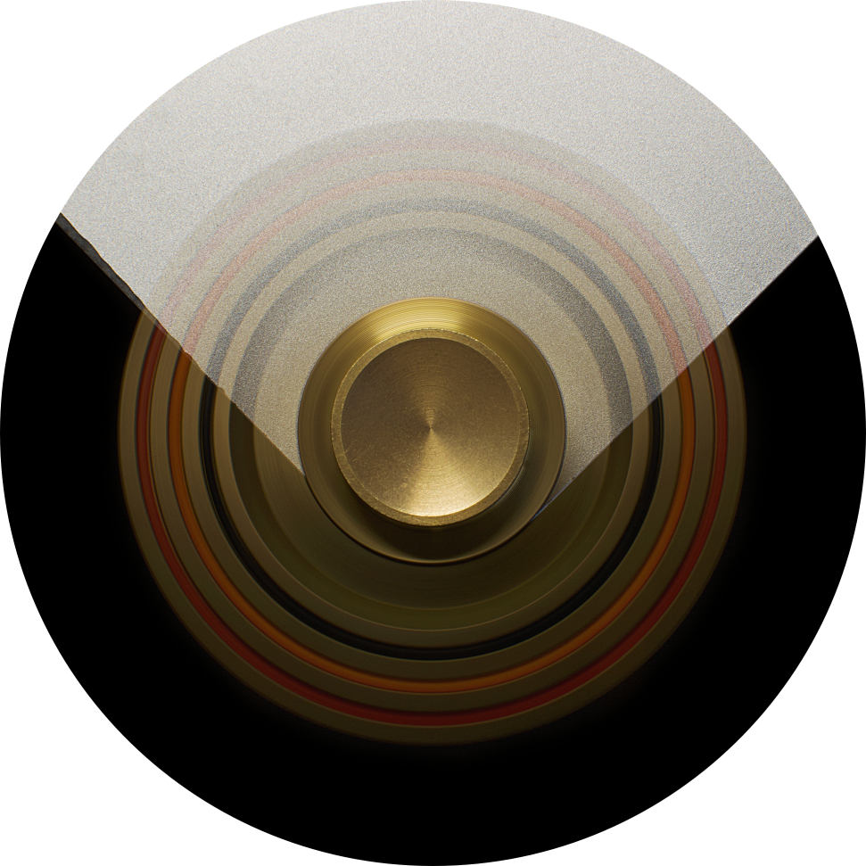
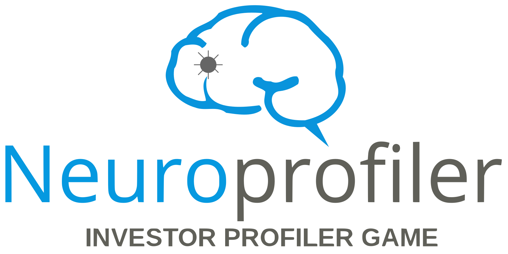
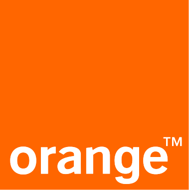
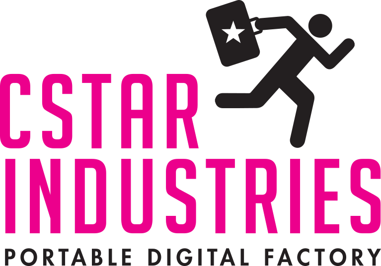
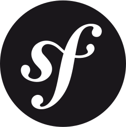
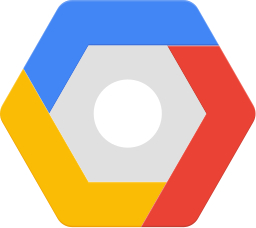
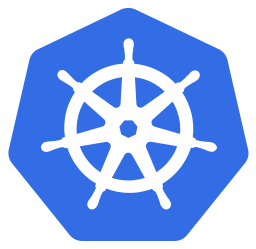

Stéphane SCHMIDELY - KOVELEO
Votre tech freine votre business ?
Features qui n'avancent plus, budget tech opaque, équipes qui ne se parlent plus ? Je reprends le contrôle avec vous, du diagnostic jusqu'à l'autonomie.
Photo: Declan Sun / PexelsPourquoi Koveleo ?
10 ans d'expérience, de développeur à CTO.
Spécialisé dans un problème précis: reprendre le contrôle d'un projet technique quand il échappe à ceux qui le financent.
Pour qui ?
Diagnostic honnête
L'état réel de votre tech,
pas la version polie
Reprise en main
Plan d'action, exécution,
lien tech/métier rétabli
Autonomie
Mon objectif: que vous
n'ayez plus besoin de moi
Ils m'ont fait confiance
À chaque fois le même mouvement: comprendre la situation, remettre de l'ordre, rendre autonome.
Japan Experience
Reprise d'un écosystème entier géré par un prestataire externe. Pilotage de la passation, construction de l'équipe technique de zéro, internalisation de 4 applications.

Lead technique · +4 ansNeuroprofiler
Participation à la livraison d'une application sans équipe tech en place. Gestion directe avec les cofondateurs pendant +4 ans.

Reprise & remise en qualitéOrange
Reprise d'un projet confié en externe qui n'allait pas dans le bon sens. Recadrage technique et fonctionnel, remise en qualité.
He is a top-notch specialist and full-stack developer who brings
great benefits to the project. He is very responsible and
enthusiastic about work.
Autres missions
Collège des Bernardins
Libon

cstar Industries
Comment on travaille ensemble
Simple, transparent, sans engagement initial
On échange
Un premier appel pour comprendre votre contexte, vos enjeux, et voir si on est alignés.
On diagnostique
Je regarde ce qui tourne vraiment - code, organisation, relation presta. Vous repartez avec un état des lieux et un plan d'action priorisé.
On reprend le contrôle
J'exécute le plan avec vous, je fais le lien tech/métier, je débloque ce qui freine. Et je repars quand votre équipe est autonome.
Stack technique
Quand il faut mettre les mains dans le code, voici avec quoi je travaille.

JS/TS

PHP

Python

Angular

Symfony

Rails

PostgreSQL

AWS

GCP

Kubernetes

Gitlab CI/CD
Drupal